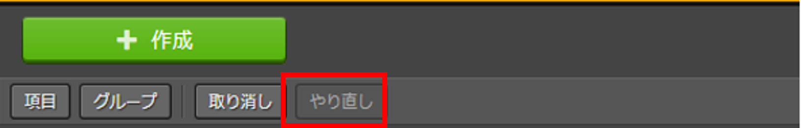
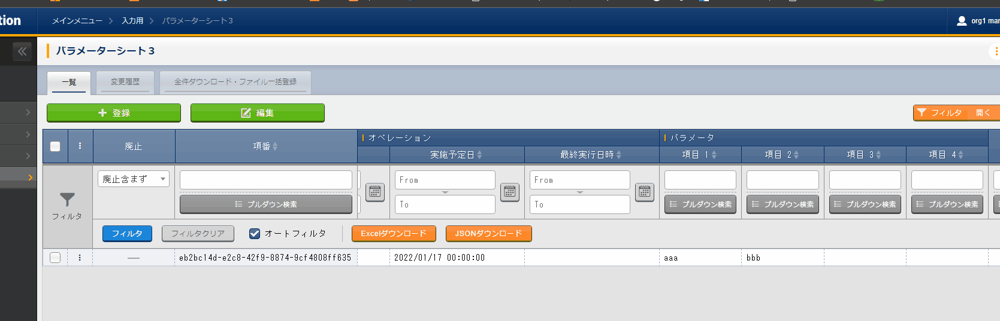
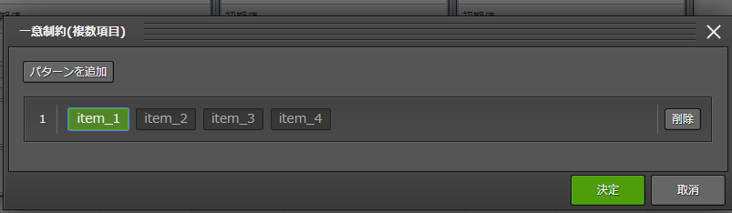

メニュー作成機能¶
はじめに¶
|本書では、ITAメニュー作成（以降、メニュー作成）システムの機能および操作方法について説明します。
メニュー作成機能の概要¶
- IaCの変数値を管理各ドライバの「代入値自動登録設定」メニューで設定可能なパラメータシートの作成が可能です。「メニュー作成」メニューグループ＞「メニュー定義・作成」メニュー＞「メニュー作成情報」タブ＞「基本情報」枠＞「作成対象」項目にて、「パラメータシート（オペレーションあり）」および「パラメータシート（ホスト/オペレーションあり）」を選択し作成したメニューをパラメータシートと呼びます。各ドライバの「代入値自動登録設定」メニューにて、対象となるパラメータシートとIaC変数を設定しておくことで、パラメータシートの「パラメータ」項目に入力された値をIaC変数に自動で代入することが可能です。
例）パラメータシート（ホスト/オペレーションあり）定義画面¶
パラメータシート利用例¶
- パラメータシートで選択できる一覧
- ホスト/オペレーションありパラメータシートが「ホスト」と「オペレーション」単位で作成されます。
- 縦メニュー利用同一項目を繰り返すパラメータ設定を行う場合、視認性をよくする縦メニューの利用が可能です。
{kind=link}
{kind=link}
{kind=link}
{kind=link}
メニュー作成機能の主要機能¶
- WebWebコンテンツ。ブラウザで提供されるメニュー作成機能を使用できる画面です。
- BackYardWebコンテンツとは独立してサーバ上で動作する常駐プロセスのことを指します。
メニュー作成機能のメニューグループ¶
- 「メニュー定義・作成」メニューでメニュー（パラメータシート/データシート）を作成する場合、「メニュー定義一覧」「カラムグループ管理」「メニュー項目作成情報」「メニュー(縦)作成情報」の各メニューへデータが自動で登録されるため、各メニュー内でデータを作成する必要はありません。また、自動でメニュー（パラメータシート/データシート）が作成されるため「メニュー作成実行」メニューで作成実行する必要もありません。
- 非表示になっているメニューを使用したい場合は、「ロール・メニュー紐付管理」で対象のメニューを復活させてください。（復活/廃止の手順は 「Exastro-ITA_利用手順マニュアル_管理コンソール」 を参照してください。）
「メニュー作成」メニューグループに所属するメニュー¶ メニ ューグループ
所属するメニュー
段落
説明
メニュ ー作成
メニュー定義・作成
パラメータシートまたはデータシートとそれに紐づく項目を作成することが可能です。
パラメータシートまたはデータシートの更新も可能です。
メニュー定義一覧
作成するパラメータシートまたはデータシートをメンテナンス(参照/更新/廃止/復活)できます。
メニュー作成履歴
メニュー作成の状態を確認できます。
カラムグループ管理
作成するパラメータシートまたはデータシートのカラムグループをメンテナンス(参照/更新/廃止/復活)できます。
※インストール時は非表示のメニューです。
メニュー項目作成情報
作成するパラメータシートまたはデータシートで管理する項目をメンテナンス(参照/更新/廃止/復活)できます。
※インストール時は非表示のメニューです。
一意制約(複数項目)
作成するパラメータシートまたはデータシートの一意制約(複数項目)をメンテナンス(参照/更新/廃止/復活)できます。
※インストール時は非表示のメニューです。
メニュー作成実行
「メニュー作成情報」で指定したメニューグループにパラメータシートまたはデータシートを作成します。
※インストール時は非表示のメニューです。
メニュー・テーブル紐付管理
作成したメニューとDBのテーブルの紐付けを表示します。
※インストール時は非表示のメニューです。
他メニュー連携
作成したメニューのメニューグループ、メニュー、項目、DBのテーブルの紐付けを表示します。
※インストール時は非表示のメニューです。
選択1
プルダウン選択で使用する項目を管理するメニューです。(1択用)
※インストール時は非表示のメニューです。
参照項目情報
参照項目として利用可能な項目を表示します。
※インストール時は非表示のメニューです。
注釈
メニュー（パラメータシート/データシート）説明¶
- 作成するシートの分類を選び、「メニュー作成情報」タブ内「作成対象」欄にて、
- パラメータシート」を選択してメニュー作成を実行各ドライバの「代入値自動登録設定」メニューで項目の設定が可能なメニュー（パラメータシート）が作成されます。
「作成対象」欄で「パラメータシート」を選択し作成されたメニュー（パラメータシート）¶
- 「データシート」を選択してメニュー作成を実行
|「代入値自動登録設定」メニューでは利用できないメニュー（データシート）が作成されます。
「作成対象」欄で「データシート」を選択し作成されたメニュー（データシート）¶
パラメータシートとデータシートの比較¶ 作成対象の選択値
代入値自動登録設定
メニュー項目
ホスト/オペレーションとの関係
パラメータシート （ホスト/オペレーションあり）
設定可能
「ホスト名」と「オペレーション」の項目が自動的に付与される。
その他の項目は自由に作成可能。
特定の「ホスト・オペレーション」に紐付く
データシート
設定不可
すべての項目を自由に作成可能。
「ホスト」や「オペレーション」に紐付かない
注釈
データシートは、他のメニューからプルダウンで選択する項目の参照元としての利用や、CMDB（Configuration ManagementDatabase、構成管理データベース）としてITA上でデータを一元管理する等の利用を想定しています。 - 作成するメニューの作成パターンメニュー作成機能で作成できるメニュー（パラメータシート/データシート）の作成パターンは合計2つです。
- パラメータシート選択 （ホスト/オペレーションあり）
- データシート選択
パラメータシートを選択した場合、メニューグループ３つに対してメニュー（パラメータシート）が作成されます。- A. 入力用
- B. 代入値自動登録用
- C. 参照用
データシートを選択した場合、メニューグループ1つに対してメニュー（データシート）が作成されます。- A) 入力用
メニュー（パラメータシート/データシート）のメンテナンス（登録/更新/廃止/復活）操作が行えるのは「A）入力用」メニューグループのみであり、その他のメニューグループではメンテナンス（登録/更新/廃止/復活）操作が行えません。メニュー作成パターン¶ メニュー種別
メニューグループ
メンテナンス
パラメータシート （ホスト/オペレーションあり）
入力用
可
代入値自動登録用
不可
参照用
不可
データシート
入力用
可
パラメーターシート「パラメーターシート１」、データシート「デタシ１」を作成した場合、入力用、代入値自動登録用、参照用各グループでの見え方は以下の通りです。
各グループでの見え方¶
「メニュー定義・作成」メニューの操作説明¶

「メニュー定義・作成」メニュー¶
(A) 項目・グループの設定¶
- 「項目」ボタン
項目 ボタンを押下すると項目が出力され設定できるようになります。
項目を入力するとメニュー（パラメータシート/データシート）に項目として追加することが可能です。 - 「グループ」ボタンカラムグループを設定します。表示したカラムグループの領域に項目をドラッグ&ドロップすると設定できるようになります。1つのグループに対して複数の項目が設定できます

カラムグループinメニュー¶
- 「取り消し」ボタン入力・設定した項目を直前に戻します。
- 「やり直し」ボタン「取り消し」ボタンを押す前の状態に戻します。
 やり直しボタン¶
- 「作成」ボタン「取り消し」ボタンを押す前の状態に戻します。
やり直しボタン¶
- 項目名定義項目の名称を入力します。初期値は「項目1」です。「/」は使用禁止です。
項目名定義¶
- 項目名定義 (REST API 用)項目の名称 (REST API 用)を入力します。初期値は「項目1」です。「/」は使用禁止です。
項目名定義 (REST API 用)¶
- 入力方式選択プルダウンメニューから入力方式を選択します。
入力方式選択¶
入力方式毎の設定項目¶ 設定箇所
説明/作成される項目
文字列（単一行）文字列（複数行）
単一行: 単一行のみ入力可能なテキストボックスとなります。
複数行: 複数行入力可能なテキストボックスとなります。
入力項目
最大バイト数
最大バイト数を入力します。
最大は8192バイトです。
半角英数字なら文字数分となります。
全角文字ならば文字数×3＋2バイト必要になります。
「入力方式」が「文字列(単一行)」の場合、入力必須です。
正規表現
正規表現による入力値チェックを行う場合は、正規表現を入力します
例：0バイト以上の半角数値項目の場合：/^[0-9]*$/
1バイト以上の半角英数字の場合：/^[a-zA-Z0-9]+$/
初期値
作成したメニューからデータを登録際デフォルトで入力欄に入る値を入力します。
項目に設定した「最大バイト数」を超える値、「正規表現」に不一致な値は入力できません。
また、作成したメニューからデータをExcel出力した際に、項目の空欄に初期値に設定した値が入った状態となります。
整数
入力値が整数かどうかのチェックが行われます。
入力項目
最小値
最小値を入力します。
-2147483648～2147483647の整数数値が入力できます。
未入力の場合は-2147483648になります。
最小値は最大値より小さい数値を入力してください。
最大値
最大値を入力します。
-2147483648～2147483647の整数数値が入力できます。
未入力の場合は2147483647になります。
最大値は最小値より大きい数値を入力してください。
初期値
作成したメニューからデータを登録する際、デフォルトで入力欄に入る値を入力します。
項目に設定した「最小値」を下回る値、「最大値」を上回る値は入力できません。
また、作成したメニューからデータをExcel出力した際に、項目の空欄に初期値に設定した値が入った状態となります。
小数
入力値が小数かどうかのチェックが行われます。
入力項目
最小値
最小値を入力します。
-99999999999999～99999999999999、整数・小数合計14桁以下の小数数値が入力できます。
未入力の場合は-99999999999999になります。
最小値は最大値より小さい数値を入力してください。
最大値
最大値を入力します。
-99999999999999～999999999 99999、整数・小数合計14桁以下の小数数値が入力できます。
未入力の場合は99999999999999になります。
最大値は最小値より大きい数値を入力してください。
桁数
整数・小数の合計桁数上限を入力します。
例: 0.123は4桁 (整数1桁、小数3桁)
11.1111は6桁 (整数2桁、小数4桁)
1～14の整数数値が入力できます。
未入力の場合は14になります。
初期値
作成したメニューからデータを登録する際、デフォルトで入力欄に入る値を入力します。
項目に設定した「最小値」を下回る値、「最大値を上回る値、「桁数」を超える値は入力できません。
また、作成したメニューからデータをExcel出力した際に、項目の空欄に初期値に設定した値が入った状態となります。
日時
カレンダー選択の項目になります。
入力項目
初期値
作成したメニューからデータを登録する際、デフォルトで入力欄に入る値を入力します。
日付
カレンダー選択の項目になります。
入力項目
初値値
作成したメニューからデータを登録する際、デフォルトで入力欄に入る値を入力します。
パラメーターシート参照
作成対象「パラメータシート(オペレーションあり)」で作成したメニューの項目を選択し、データを登録した際にオペレーションが一致する項目のレコードが参照されます。
入力項目
メニュー
作成対象「パラメータシート(オペレーションあり)」で作成したメニューをプルダウンから選択します。
「パラメータシート参照」は作成対象「データシート」では利用できません。
プルダウン選択
プルダウンの項目になります。
入力項目
選択項目
作成したメニュー(パラメータシート/データシート)から参照する対象をプルダウンから選択します。 「選択項目」欄の文字列は「メニューグループ：メニュー：項目」の構成です。
「入力方式」が「プルダウン選択」の場合、選択必須必須です。
※「選択項目」に表示される対象は「プルダウン選択」の「選択項目」で利用できる対象についてを参照してください。
参照項目
「プルダウン選択」の「選択項目」で選んだ項目に対して、同じメニューに存在する別の項目を横並びで表示させることができます。
「参照項目を選択」ボタンを押下すると横並びで表示させることが可能な項目の一覧が表示され、チェックボックスにチェックを入れて「決定」ボタンを押下することで対象を指定することができます。
詳細な利用方法は「プルダウン選択」利用時の「参照項目」についてを参照してください。
初期値
作成したメニューからデータを登録する際、デフォルトで選択されている値を指定します。
項目に設定した「選択項目」に登録されているデータをプルダウンから選択します。 また、作成したメニューからデータをExcel出力した際に、項目の空欄に初期値に設定した値が入った状態となります。
パスワード
入力中の文字列が「●」で隠された状態の項目になります。
入力項目
最大バイト数
最大バイト数を入力します。
最大は8192バイトです。
半角英数字なら文字数分となります。
全角文字ならば文字数×3＋2バイト必要になります。
「入力方式」が「パスワード」の場合、入力必須で。
ファイルアップロード
ファイルを参照し選択できるボタンと「事前アップロード」ボタンのある項目になります。
入力項目
ファイル最大バイト数
アップロードするファイルの最大バイト数を入力します。 最大は4294967296バイトです。
「入力方式」が「ファイルアップロード」の場合、入力必須です。
リンク
入力したURLがリンク表示になります。
入力項目
最大バイト数
最大バイト数を入力します。
最大は8192バイトです。
半角英数字なら文字数分となります。
全角文字ならば文字数×3＋2バイト必要になります。
「入力方式」が「リンク」の場合、入力必須です。
初期値
作成したメニューからデータを登録する際、デフォルトで入力欄に入る値を入力します。
項目に設定した「最大バイト数」を超える値は入力できません。
また、作成したメニューからデータをExcel出力した際に、項目の空欄に初期値に設定した値が入った状態となります。
各入力方式共通の設定項目¶ 設定箇所
説明
必須
必須項目にするかどうかを、チェックボックスにて設定します。
一意制約項目
一意制約項目にするかどうかを、チェックボックスにて設定します。
説明
備考
備考欄を入力します。
{kind=link}
{kind=link}
{kind=link}
{kind=link}
{kind=link}
{kind=link}
{kind=link}
{kind=link}
(B) 「メニュー作成情報」タブ¶
- メニュー作成のために必要な情報を入力します。
- 「基本情報」枠
「基本情報」枠¶
「基本情報」枠設定値¶ 設定箇所
説明
作成対象の選択値
パ ラメータシート
データシート
項番
メニュー（パラメータシート/データシート）作成 時は「自動入力」と表示されます。既存メニ ュー（パラメータシート/データシート）の編 集時はそのメニューの項番が表示されます。
表示
表示
メニュー名
作成するメニュー（パラメータシート/データシート）の名称を入力します。「メインメニュー」という名称はメニュー名に使用できません。
表示
表示
作成対象
プルダウンから「パラメータシート(ホスト/オペレーションあり)」、「パラメータシート(オペレーションあり)」、「データシート」のいずれかを選択します。
「データシート」を選択すると、「対象メニューグループ」枠に「入力用」欄が表示されます。
「パラメータシート（オペレーションあり）」を選択すると、「基本情報」枠に「縦メニュー利用」チェックボックス、「対象メニューグループ」枠に「入力用」欄、「代入値自動登録用」欄、「参照用」欄が表示されます。
「パラメータシート（ホスト/オペレーションあり）」を選択すると、「基本情報」枠に「ホストグループ利用」チェックボックス、「縦メニュー利用」チェックボックス、「対象メニューグループ」枠に「入力用」欄、「代入値自動登録用」欄、「参照用」欄が表示されます。
初期値は「パラメータシート(ホスト/オペレーションあり)」です。
表示
表示
表示順序
メニューグループにおける表示順序を入力します。昇順に表示されます。
表示
表示
縦メニュー利用
「作成対象」欄で「パラメータシート」を選択した場合、「縦メニュー利用」欄が表示されます。
「利用する」チェックボックスにチェックをいれた場合、縦メニューに対応したパラメータシートを作成します。
表示
非表示
最終
更新日時
初期表示は「自動入力」となります。
閲覧、編集モードの場合表示されます。
最終更新者が「メニュー作成機能」(BackYardがレコードを更新する際のユーザ)である場合、そのレコードを除いた最新のレコードの最終更新日時が表示されます。
表示
表示
最終
更新者
初期表示は「自動入力」となります。
閲覧、編集モードの場合表示されます
最終更新者が「メニュー作成機能」(BackYardがレコードを更新する際のユーザ)である場合、そのレコードを除いた最新のレコードの最終更新者が表示されます。
表示
表示
- 「対象メニューグループ」枠メニュー（パラメータシート/データシート）作成時に使用するメニューグループを表示します。「対象メニューグループを選択」ボタンを押下すると、「対象メニューグループ」選択画面が表示され、使用したいメニューグループを選択、設定することが出来ます。
対象メニューグループ」枠設定値¶ 設 定箇 所
説明1
作成対象の選択値
パ ラメータシート
データシート
入力用
初期値は「入力用」メニューグループです。
「対象メニューグループ」選択画面の「入力用」列で選択したメニューグループ名が表示されます。
※選択必須項目です。
表示
表示
代入値自動登録用
初期値は「代入値自動登録用」メニューグループです。
「作成対象」欄が「パラメータシート」の場合、「対象メニューグループ」選択画面の「代入値自動登録用」列で選択したメニューグループ名が表示されます。
※「対象メニューグループ」枠に表示されている場合、選択必須項目です。
表示
非表示
参照用動登録用
初期値は「参照用」メニューグループです。
「作成対象」欄が「パラメータシート」の場合、「対象メニューグループ」選択画面の「参照用」列で選択したメニューグループ名が表示されます。
表示
非表示
「対象メニューグループ」選択画面¶
注釈
画像は「作成対象」欄で「パラメータシート」を選択した場合になります。- 「対象メニューグループ」選択画面
- メニュー（パラメータシート/データシート）を作成する対象となるメニューグループを選択します。
- デフォルトでは「入力用」「代入値自動登録用」「参照用」メニューグループが選択されています。
- 使用したいメニューグループを選択し「決定」ボタンを押下してください。
- デフォルトのまま「決定」ボタンを押下すると、自動的に「入力用」「代入値自動登録用」「参照用」メニューグループが作成されます。（「作成対象」欄で「データシート」を選択した場合は「入力用」メニューグループのみ作成されます。）
- デフォルトのメニューグループを使用しない場合は、事前に「管理コンソール」メニューグループで作成してください。（作成方法については 「Exastro-ITA_利用手順マニュアル_管理コンソール」 を参照してください。）
- 「メニュー定義/一覧」メニューに戻る場合は「取消」ボタンを押下してください。
- 「一意制約(複数項目)」枠作成したメニューにデータを登録する際に、指定した複数の項目で同じレコードの組み合わせが登録できないように制御する機能です。
 「一意制約(複数項目)」が設定されたメニュー¶
「一意制約(複数項目)を選択」ボタンを押下すると、「一意制約(複数項目)」設定画面が表示され、一意制約を適用させる項目の組み合わせを設定できます。- 「一意制約(複数項目)」設定画面
- 「パターンを追加」ボタンを押下することで組み合わせのパターンが1つ追加されます。パターンは複数設定することができます。
- パターンには現在の項目がすべて表示され、項目をクリックすることで一意制約とする項目の組み合わせを設定できます。
- 不要なパターンは「削除」ボタンを押下することで削除することができます。
- 「取消」ボタンを押下することで、設定を反映させずに設定画面を閉じることができます。
- 「決定」ボタンを押下することで、設定した組み合わせのパターンが反映されます。
「一意制約(複数項目)」設定画面¶
- 以下のパターンはバリデーションエラーになります。① 1つのパターンに項目が1つしか選択されていない場合。② 同じ項目の組み合わせのパターンが存在する場合。
 1つのパターンに項目が1つしか選択されていない場合¶
同じ項目の組み合わせのパターンが存在する場合¶
- 「アクセス許可ロール」枠
- ロールを選択した場合メニュー定義（「メニュー作成」メニューグループ配下の各メニュー）は、選択したロールからのみアクセスが可能となります。作成したメニュー（パラメータシート/データシート）は、「ロール/メニュー紐付管理」メニューの設定により選択したロールのみアクセス可能となります。
- ロールを一つも選択しなかった場合メニュー定義（「メニュー作成」メニューグループ配下の各メニュー）は、すべてのロールがアクセス可能となります。作成したメニュー（パラメータシート/データシート）は、「ロール/メニュー紐付管理」メニューの設定によりシステム管理者のロールと作成ユーザが所属するロールのみアクセス可能となります。
「アクセス許可ロール」設定画面¶
{kind=link}
{kind=link}
{kind=link}
{kind=link}
{kind=link}
{kind=link}
{kind=link}
(C) 「プレビュー」¶
- 「プレビュー」タブ入力中の項目がテーブル形式で表示されます。
「プレビュー」タブ¶
- 「ログ」タブ「作成」ボタン押下後の作成実行結果の内容を表示します。
{kind=link}
(D) 「作成」¶
{kind=link}
{kind=link}
メニュー作成受付後の「メニュー定義・作成」メニューの使い方¶
- 閲覧画面
閲覧画面¶
新規作成後は上記の様に画面遷移します。閲覧画面ではメニュー（パラメータシート/データシート）の編集や作成は出来ません。画面上に表示されている「編集」、「初期化」、「流用新規」ボタンを押下することで、編集や作成が可能になります。「編集」ボタンと「初期化」ボタンではなく「作成(新規)」ボタンが表示される場合は、メニュー作成機能のBackYard処理がメニュー作成を完了していない状態です。メニュー作成完了後にブラウザ画面を更新すると、「編集」ボタンと「初期化」ボタンが表示されるようになります。メニュー作成のステータスは「メニュー作成履歴」ボタンより遷移できる「メニュー作成履歴」メニューで確認できます。Backyard処理が完了していない場合のボタン配置¶
Backyard処理が完了している場合のボタン配置¶
- 「作成(新規)」ボタン ( Backyard処理完了前)「作成(新規)」ボタンを押下すると閲覧画面から編集画面へ遷移します。編集画面では、「入力用」メニューグループから登録したデータを保持したまま、項目の追加や削除が可能です。編集し「作成(編集)」ボタンを押下するとメニュー（パラメータシート/データシート）の編集が実行されます。
- 「作成(編集)」ボタン ( Backyard処理完了後)「作成(編集)」ボタンを押下すると閲覧画面から編集画面へ遷移します。編集画面では、「入力用」メニューグループから登録したデータを保持したまま、項目の追加や削除が可能です。（既存の項目の設定値や、基本情報は一部箇所を除いて修正できません）編集し「作成(編集)」ボタンを押下するとメニュー（パラメータシート/データシート）の編集が実行されます。
Backyard処理が完了している場合の編集不可箇所¶
- 「初期化」ボタン「初期化」ボタンを押下すると閲覧画面から初期化画面へ遷移します。初期化画面では値を編集し「作成(初期化)」ボタンを押下するとメニュー（パラメータシート/データシート）が再作成されます。再作成される際、「入力用」メニューグループから登録したデータは削除されます。
- 「流用新規」ボタン「流用新規」ボタンを押下すると、閲覧画面で表示中のメニューをテンプレートとして新規作成する画面へ遷移します。メニュー名と表示順序は新たに入力してください。メニュー名は既存のメニュー名と違う名前にしてください。
- 「メニュー作成履歴」ボタン閲覧画面に表示されているメニューの「メニュー作成履歴」メニューに遷移します。
- 編集画面
編集画面¶
編集画面では「入力用」メニューグループで登録したデータを保持したまま、メニューの編集をすることが可能です。既存項目は「項目名」「正規表現」「説明」「備考」の設定値を自由に変更できます。「最大バイト数」「最小値」「最大値」「桁数」「ファイル最大バイト数」の設定値については、元の値よりも大きい数値にのみ変更できます。「正規表現」を変更した場合、登録済みのデータが変更後の「正規表現」と不整合な状態になったとしてもデータは保持されます。「最大バイト数」「最小値」「最大値」「桁数」「ファイル最大バイト数」の既存項目を削除した場合、その項目に入力されていたデータは削除されます。新規項目を追加した場合、レコードが空の状態で項目が追加されます。「必須」「一意制約」にチェックを入れた場合でもレコードが空の状態となるため、登録データに不整合が生じる場合があります。対象メニューグループを変更した場合、変更前に選択されていたメニューグループに作成されているメニューは廃止され、変更後のメニューグループに新たに登録されます。（その場合も登録したデータは保持されます。）「基本情報」の「メニュー名」「作成対象」「ホストグループ利用」「縦メニュー利用」の設定値を変更することはできません。「メニュー項目作成情報」メニューから項目のデータを更新して「作成(編集)」を実行した場合、作成したメニューに不整合が発生する場合があります。- 「作成(編集)」ボタン編集画面に表示されているメニュー（パラメータシート/データシート）に、データを保持したまま編集します。
注釈
既存メニュー（パラメータシート/データシート）を編集する場合、項目間で項目名の交換ができないため、項目名を変更すると、作成する時エラーが発生する恐れがあります。 - 「再読込」ボタン編集内容が破棄されて、登録内容の状態に戻ります。
- 「キャンセル」ボタン「編集」ボタン押下前の状態に戻ります。
編集画面の各ボタン¶
- 初期化画面
初期化画面¶
初期化画面では画面に表示されているメニューを編集することが可能です。対象メニューグループを変更した場合、変更前に選択されていたメニューグループに作成されているメニューは廃止され、変更後のメニューグループに新たに登録されます。「基本情報」の「メニュー名」を変更することはできません。「メニュー名」以外の編集に制限はありませんが「入力用」メニューグループで登録したデータはすべて削除されます。- 「作成(初期化)」ボタン編集画面に表示されているメニュー（パラメータシート/データシート）が再作成されます。
注釈
既存メニュー（パラメータシート/データシート）を編集する場合、項目間で項目名の交換ができないため、項目名を変更すると、作成する時エラーが発生する恐れがあります。- 「再読込」ボタン編集内容が破棄されて登録内容の状態に戻ります。
- 「キャンセル」ボタン「編集」ボタン押下前の状態に戻ります。
{kind=link}
{kind=link}
{kind=link}
{kind=link}
{kind=link}
{kind=link}
{kind=link}
{kind=link}
{kind=link}
{kind=link}
{kind=link}
「メニュー作成履歴」メニューで作成状況の確認¶
{kind=link}
「メニュー作成履歴」メニュー¶
項目名 |
説明 |
|---|---|
メニュー名 |
作成対象のメニュー（パラメータシート/データシート）名です。 |
ステータス |
メニュー（パラメータシート/データシート）作成状況のステータスです。 未実行：メニュー（パラメータシート/データシート）作成前の状態 実行中：BackYardがメニュー（パラメータシート/データシート）作成処理を実行中 完了 ：メニュー（パラメータシート/データシート）作成が正常に完了 完了（異常）：メニュー（パラメータシート/データシート）作成時にエラー終了した状態 |
作成タイプ |
メニュー（パラメータシート/データシート）作成のタイプです。 新規作成：新しくメニューを作成した場合 初期化：既存メニューを初期化した場合 編集：既存メニューを編集した場合 |
備考 |
自由記述欄です。 |
作成されたメニューの確認¶
- データシート1. 入力用メニューグループ
- パラメータシート（オペレーションあり）1. 入力用メニューグループ2. 代入値自動登録用メニューグループ3. 参照用メニューグループ
- パラメータシート（ホスト/オペレーションあり）1. 入力用メニューグループ2. 代入値自動登録用メニューグループ3. 参照用メニューグループ
- パラメータシート（ホスト/オペレーションあり） ＆ ホストグループ利用1. 入力用メニューグループ2. 代入値自動登録用メニューグループ3. 参照用メニューグループ
- パラメータシート ＆ 縦メニュー利用1. 入力用メニューグループ2. 代入値自動登録用メニューグループ3. 参照用メニューグループ

「基本情報」枠の選択箇所¶
- 「作成対象」欄で”データシート”を選択した場合メニュー（パラメータシート/データシート）作成時に「メニュー定義・作成」メニュー（または「メニュー定義一覧」メニュー）の「作成対象」欄で「データシート」を選択した場合、データシートが作成されます。

データシート作成¶
「入力用（メニューグループ）」欄で指定したメニューグループにデータシートが追加されていることを確認してください。
「入力用」メニューグループ¶
- 入力用メニューグループメンテナンス（登録/更新/廃止/復活）が可能なデータシートが作成されます。

入力用メニューグループ配下に作成されたデータシート¶
注釈
データシートは特定のホスト/オペレーションに紐づかないためホスト/オペレーション項目は表示されません。注釈
「代入値自動登録用」および「参照用」メニューグループにはデータシートは作成されません。
- 「作成対象」欄で”パラメータシート（オペレーションあり）”を選択した場合メニュー（パラメータシート/データシート）作成時に「メニュー定義・作成」メニュー（または「メニュー定義一覧」メニュー）の「作成対象」欄で「パラメータシート（オペレーションあり）」を選択した場合、オペレーション単位のパラメータシートが作成されます。

パラメータシート（オペレーションあり）作成¶
「入力用（メニューグループ）」欄、「代入値自動管理用（メニューグループ）」欄、「参照用（メニューグループ）」欄で指定したメニューグループにパラメータシートが追加されていることを確認してください。
「入力用」「代入値自動登録用」「参照用」メニューグループ¶
- 入力用メニューグループオペレーショ単位でメンテナンス（登録/更新/廃止/復活）が可能なパラメータシートが作成されます。

入力用メニューグループ配下に作成されたパラメータシート¶
- 代入値自動登録用メニューグループ閲覧専用メニューです。入力用メニューグループで登録した内容がオペレーション単位で「一覧」サブメニューに表示されます。

代入値自動登録用メニューグループ配下に作成されたパラメータシート¶
- 参照用メニューグループ閲覧専用メニューです。「表示フィルタ」サブメニューの「オペレーション：基準日時」欄で指定した日時の時点で有効になっている設定を「一覧」サブメニューに表示します。

参照用メニューグループ配下に作成されたパラメータシート¶
注釈
「表示フィルタ」サブメニューの「オペレーション：基準日時」欄が空白の状態で「フィルタ」ボタンを押下した場合、「一覧」サブメニューにオペレーション単位で「基準日時」欄が最新のデータのみ表示されます。 - 「作成対象」欄で”パラメータシート（ホスト/オペレーションあり）”を選択した場合メニュー（パラメータシート/データシート）作成時に「メニュー定義・作成」メニュー（または「メニュー定義一覧」メニュー）の「作成対象」欄で「パラメータシート（ホスト/オペレーションあり）」を選択した場合、ホスト名単位のパラメータシートが作成されます。

パラメータシート（ホスト/オペレーションあり）作成¶
「入力用（メニューグループ）」欄、「代入値自動管理用（メニューグループ）」欄、「参照用（メニューグループ）」欄で指定したメニューグループにパラメータシートが追加されていることを確認してください。
「入力用」「代入値自動登録用」「参照用」メニューグループ¶
- 入力用メニューグループホスト名単位でメンテナンス（登録/更新/廃止/復活）が可能なパラメータシートが作成されます。

入力用メニューグループ配下に作成されたパラメータシート¶
- 代入値自動登録用メニューグループ閲覧専用メニューです。入力用メニューグループで登録した内容がホスト名単位で「一覧」サブメニューに表示されます。

代入値自動登録用メニューグループ配下に作成されたパラメータシート¶
- 参照用メニューグループ閲覧専用メニューです。「表示フィルタ」サブメニューの「オペレーション：基準日時」欄で指定した日時の時点で有効になっている設定をホスト名単位で「一覧」サブメニューに表示します。

参照用メニューグループ配下に作成されたパラメータシート¶
注釈
「表示フィルタ」サブメニューの「オペレーション：基準日時」欄が空白の状態で「フィルタ」ボタンを押下した場合、「一覧」サブメニューにホスト名単位で「基準日時」欄が最新のデータのみ表示されます。
- 「作成対象」欄で”パラメータシート（ホスト/オペレーションあり）”を選択し、「ホストグループ利用」チェックボックスにチェックを入れた場合メニュー（パラメータシート/データシート）作成時に「メニュー定義・作成」メニュー（または「メニュー定義一覧」メニュー）の「作成対象」欄で「パラメータシート（ホスト/オペレーションあり）」を選択し、「ホストグループ利用」欄の「利用する」チェックボックスにチェックを入れた場合、ホスト名またはホストグループ名単位のパラメータシートが作成されます。

パラメータシート（ホストグループ利用）作成¶
「入力用（メニューグループ）」欄、「代入値自動管理用（メニューグループ）」欄、「参照用（メニューグループ）」欄で指定したメニューグループにパラメータシートが追加されていることを確認してください。
「入力用」「代入値自動登録用」「参照用」メニューグループ¶
- 入力用メニューグループホスト名またはホストグループ名単位でメンテナンス（登録/更新/廃止/復活）が可能なパラメータシートが作成されます。

入力用メニューグループ配下に作成されたパラメータシート¶
「登録」サブメニューの「ホスト名/ホストグループ名」欄にて、ホストグループ名は名称の先頭に[HG]と表示されます。ホスト名は名称の先頭に[H]と表示されます。
「ホスト名/ホストグループ名」欄¶
- 代入値自動登録用メニューグループ閲覧専用メニューです。入力用メニューグループで登録した内容がホスト名単位で「一覧」サブメニューに表示されます。

代入値自動登録用メニューグループ配下に作成されたパラメータシート¶
- 参照用メニューグループ閲覧専用メニューです。「表示フィルタ」サブメニューの「オペレーション：基準日時」欄で指定した日時の時点で有効になっている設定をホスト名単位で「一覧」サブメニューに表示します。

参照用メニューグループ配下に作成されたパラメータシート¶
注釈
「表示フィルタ」サブメニューの「オペレーション：基準日時」欄が空白の状態で「フィルタ」ボタンを押下した場合、「一覧」サブメニューにホスト名単位で「基準日時」欄が最新のデータのみ表示されます。「入力用（メニューグループ）」欄、「代入値自動管理用（メニューグループ）」欄、「参照用（メニューグループ）」欄で指定したメニューグループにパラメータシートが追加されていることを確認してください。
「入力用」「代入値自動登録用」「参照用」メニューグループ¶
- 入力用メニューグループホスト名単位でメンテナンス（登録/更新/廃止/復活）が可能なパラメータシートが作成されます。（ホストグループ利用にチェックを入れた場合、ホストグループ名単位でメンテナンス可能です。）登録済みの「ホスト名」と「オペレーション」の組み合わせに対して、「代入順序」欄を入力することで複数のパラメータを設定することが可能です。

入力用メニューグループ配下に作成されたパラメータシート¶
注釈
「4：REPEAT」設定の場合、代入順序1～4の範囲で登録することが可能です。例）縦メニューを利用しないで上記の登録を試みた場合①登録済みの「ホスト名」と「オペレーション」の組み合わせに対して、複数のパラメータを設定することはできません。
入力用メニューグループ配下に作成されたパラメータシート¶
注釈
「host01」と「operation01」の組み合わせに対し既に「11.11.11.11」「test1.com」が設定されている場合、同様に「22.22.22.22」「test2.com」を設定しようとすると重複エラーになります。例）縦メニューを利用しないで上記の登録を試みた場合②登録済みの「ホスト名」と「オペレーション」の組み合わせに対して、複数のパラメータを設定する場合、項目数を増やすことで設定可能ですが、パラメータシートが横長になり視認性が悪くなります。
「メニュー定義・作成」メニュー¶
注釈
「メニュー作成」メニューグループ>「メニュー定義・作成」メニューにて項目を作成した分、パラメータを設定することが可能です。
入力用メニューグループ配下に作成されたパラメータシート¶
注釈
上記の場合、「IPアドレス_４」「ドメイン_４」まで項目を作成しており、それ以降の項目は存在しません。また、項目が存在しないため、同一の「ホスト名」「オペレーション」の組み合わせに対して「IPアドレス_５」「ドメイン_５」にあたる内容（「55.55.55.55」「test5.com」）を登録することはできません。hostsファイルの様に、同一の項目を繰り返すパラメータシートを作成する場合、縦メニューの利用を推奨します。（データシートには縦メニューの利用はできません。） - 代入値自動登録用メニューグループ閲覧専用メニューです。入力用メニューグループで登録した内容が縦メニューから通常メニュー（横表示）に自動的に変換された形式で「一覧」サブメニューに表示されます。

代入値自動登録用メニューグループ配下に作成されたパラメータシート¶
「ホスト名」と「オペレーション」の組み合わせに対して1行で登録内容が表示されます。パラメータには「項目名[繰り返し数]」が表示されます。 - 参照用メニューグループ閲覧専用メニューです。「表示フィルタ」サブメニューの「オペレーション：基準日時」欄で指定した日時の時点で有効になっている設定を「ホスト名」と「オペレーション」の組み合わせ単位で「一覧」サブメニューに表示します。

参照用メニューグループ配下に作成されたパラメータシート¶
注釈
「表示フィルタ」サブメニューの「オペレーション：基準日時」欄が空白の状態で「フィルタ」ボタンを押下した場合、「一覧」サブメニューにホスト名単位で「基準日時」欄が最新のデータのみ表示されます。
「メニュー作成」メニューグループのインストール時非表示メニュー¶
「カラムグループ管理」メニューでカラムグループを登録¶

「カラムグループ管理」メニュー¶

入力用メニューグループ配下に作成されたパラメータシート¶
設定箇所 |
説明 |
|---|---|
カラムグループ |
親カラムグループとカラムグループ名が「/」つなぎで表示されます。 ※「一覧/更新」サブメニューに表示あり ※「更新」「廃止/復活」ボタンあり |
親カラムグループ |
親カラムグループをプルダウンから選択します。 ※「一覧/更新」サブメニューの「更新」ボタンおよび「登録」サブメニューに表示あり |
カラムグループ名 |
カラムグループ名を入力します。 ※「一覧/更新」サブメニューの「更新」ボタンおよび「登録」サブメニューに表示あり |
備考 |
自由記述欄です。 |
- そのデータ自身を親カラムグループに選択できません。
- 他のデータの親グループに指定されている場合、廃止できません。
- ループ関係になるような親子関係は設定できません。（親子関係がA⇒B⇒Cの場合、CをAの親には指定できません。）
「メニュー項目作成情報」メニューで設定する項目を登録¶

「メニュー項目作成情報」メニュー¶
設定箇所 |
説明 |
|
|---|---|---|
メニュー名 |
項目を紐付けするメニュー（パラメータシート/データシート）をプルダウンから選択します。 |
|
項目名 |
メニュー（パラメータシート/データシート）に表示する項目名を入力します。 ※項目名に「/」は使用禁止です。あああああああああああ |
|
表示順序 |
メニューに表示されるカラムの順序を入力します。左から昇順に表示されます。 |
|
必須 |
必須項目にする場合は、「●」をプルダウンから選択します。 |
|
一意制約 |
一意制約項目にする場合は、「●」をプルダウンから選択します。 |
|
カラムグループ |
所属するカラムグループをプルダウンから選択します。 |
|
入力方式 |
「文字列(単一行)」、「文字列(複数行)」、「整数」、「小数」、「日時」、「日付」、「プルダウン選択」、「パスワード」、「ファイルアップロード」、「リンク」のいずれかをプルダウンから選択します。 「文字列(単一行)」を選択した場合、単一行のみ入力可能なテキストボックスの項目になります。 「文字列(複数行)」を選択した場合、複数行が入力可能なテキストボックスの項目になります。 「整数」を選択した場合、整数であることのチェックが行われるテキストボックスの項目になります。 「小数」を選択した場合、小数であることのチェックが行われるテキストボックスの項目になります。 「日時」と「日付」を選択した場合、カレンダー選択の項目になります。 「プルダウン選択」を選択した場合、プルダウンの項目になります。データを登録した際に値がリンクとなり、クリックで元データが登録されているメニューへ遷移できます。遷移後に表示フィルタの検索条件にデータが設定されて検索されますが、検索文字列は先頭から最大1024バイトとなります。（「文字列(複数行)」の項目をプルダウン選択にした際のリンクの挙動が変わります。「「文字列(複数行)」の項目を「プルダウン選択」にした際のリンクについて 」に詳細を記載しています。） また「参照項目を選択」ボタンから、「プルダウン選択」で選んだレコードと同じ行のレコードを横並びで表示させることができます。 「パスワード」を選択した場合、入力中の文字列が「●」で隠された状態のテキストボックスの項目になります。（枠内の瞳のアイコンを押下している間のみ、入力した文字列が表示されます。） 「ファイルアップロード」を選択した場合、ファイルを参照し選択できるボタンと「事前アップロード」ボタンのある項目になり、ファイルをアップロードすることが可能になります。 「リンク」を選択した場合、入力したURLがリンク表示になるテキストボックスの項目になります。 「パラメータシート参照」を選択した場合、作成対象「パラメータシート(オペレーションあり)」で作成したメニューの項目を選択し、データを登録した際にオペレーションが一致する項目のレコードが参照されます。また、「パラメータシート参照」は作成対象「データシート」では利用できません。 「入力方式「パラメータシート参照」について 」に詳細を記載しています ※代入値自動登録設定の連携対象項目は「文字列(単一行)」、「文字列(複数行)」、「整数」、「小数」、「パスワード」、「リンク」になります。 「日時」、「日付」、「ファイルアップロード」は連携しません。「プルダウン選択」で選ぶ項目が「日時」、「日付」の場合も連携しません。 |
|
文字列 (単一行) |
最大バイト数 |
最大バイト数を入力します。 最大は8192バイトです。 半角英数字なら文字数分となります。 全角文字ならば文字数×３＋２バイト必要になります。 「入力方式」が「文字列(単一行)」の場合、必須です。 「入力方式」が「文字列(複数行)」、「整数」、「小数」、「日時」、「日付」、「プルダウン選択」の場合、入力不可です。 |
正規表現 |
正規表現による入力値チェックを行う場合は、正規表現を入力します。 例：0バイト以上の半角数値項目の場合：/^[0-9]*$/ 1バイト以上の半角英数字の場合：/^[a-zA-Z0-9]+$/ 「入力方式」が「文字列(複数行)」、「整数」、「小数」、「日時」、「日付」、「プルダウン選択」の場合、入力不可です。 |
|
初期値 |
作成したメニューからデータを登録する際、デフォルトで入力欄に入る値を入力します。 項目に設定した「最大バイト数」を超える値、「正規表現」に不一致な値は入力できません。 また、作成したメニューからデータをExcel出力した際に、項目の空欄に初期値に設定した値が入った状態となります。 |
|
文字列 (複数行) |
最大バイト数 |
最大バイト数を入力します。 最大は8192バイトです。 半角英数字なら文字数分となります。 全角文字ならば文字数×3＋2バイト必要になります。 「入力方式」が「文字列(複数行)」の場合、必須です。 「入力方式」が「文字列(単一行)」、「整数」、「小数」、「日時」、「日付」、「プルダウン選択」の場合、入力不可です。 |
正規表現 |
正規表現に よる入力値チェックを行う場合は、正規表現を入力します。 例：0バイト以上の半角数値項目の場合：/^[0-9]*$/ 1バイト以上の半角英数字の場合：/^[a-zA-Z0-9]+$/ 「入力 方式」が「文字列(単一行)」、「整数」、「小数」、「日時 」、「日付」、「プルダウン選択」の場合、入力不可です。 |
|
初期値 |
作成したメニューからデータを登録する際、デフォルトで入力欄に入る値を入力します。 項目に設定した「最大バイト数」を超える値、「正規表現」に不一致な値は入力できません。 また、作成したメニューからデータをExcel出力した際に、項目の空欄に初期値に設定した値が入った状態となります。 |
|
整数 |
最小値 |
最小値を入力します。 -2147483648～2147483647の整数数値が入力できます。 未入力の場合は-2147483648になります。 最小値は最大値より小さい数値を入力してください。 「入力方式」が「文字列」、「小数」、「日時」、「日付」、「プルダウン選択」の場合、入力不可です。 |
最大値 |
最大値を入力します。 -2147483648～2147483647の整数数値が入力できます。 未入力の場合は2147483647になります。 最大値は最小値より大きい数値を入力してください。 「入力方式」が「文字列」、「小数」、「日時」、「日付」、「プルダウン選択」の場合、入力不可です。 |
|
初期値 |
作成したメニューからデータ を登録する際、デフォルトで入力欄に入る値を入力します。 項目に設定した「最小 値」を下回る値、「最大値」を上回る値は入力できません。 また、作成したメニューからデータをExcel出力した際に、 項目の空欄に初期値に設定した値が入った状態となります。 |
|
小数 |
最小値 |
最小値を入力します。 -99999999999999～99999999999999、整数・小数合計14桁以下の小数数値が入力できます。 未入力の場合は-99999999999999になります。 最小値は最大値より小さい数値を入力してください。 「入力方式」が「文字列」、「整数」、「日時」、「日付」、「プルダウン選択」の場合、入力不可です。 |
最大値 |
最大値を入力します。 -99999999999999～99999999999999、整数・小数合計14桁以下の小数数値が入力できます。 未入力の場合は99999999999999になります。 最大値は最小値より大きい数値を入力してください。 「入力方式」が「文字列」、「整数」、「日時」、「日付」、「プルダウン選択」の場合、入力不可です。 |
|
桁数 |
整数・小数の合計桁数上限を入力します。 例: 0.123は4桁 (整数1桁、小数3桁) 11.1111は6桁 (整数2桁、小数4桁) 1～14の整数数値が入力できます。 未入力の場合は14になります。 「入力方式」が「文字列」、「整数」、「日時」、「日付」、「プルダウン選択」の場合、入力不可です。 |
|
初期値 |
作成したメニューからデータを登録する際、デフォルトで入力欄に入る値を入力します。 項目に設定した「最小値」を下回る値、「最大値」を上回る値、「桁数」を超える値は入力できません。 また、作成したメニューからデータをExcel出力した際に、項目の空欄に初期値に設定した値が入った状態となります。 |
|
プルダウン選択 |
メニューグループ：メニュー：項目 |
作成したメニュー(パラメータシート/データシート)から参照する対象をプルダウンから選択します。 「入力方式」が「プルダウン選択」の場合、選択必須です。 ※「プルダウン選択」に表示される対象は「プルダウン選択」の「選択項目」で利用できる対象についてを参照してください。 |
参照項目 |
「プルダウン選択」の「メニューグループ：メニュー：項目」で選んだ項目に対して、同じメニューに存在する別の項目を横並びで表示させることができます。 対象となる項目は「プルダウン選択/メニューグループ：メニュー：項目」で選択した項目と同じメニューの項目のIDをカンマ区切りで入力することで選択できます。項目のIDは「参照項目情報」（インストール時非表示）メニューの項番が対象となります。 詳細な利用方法は「は「プルダウン選択」利用時の「参照項目」についてを参照してください。 |
|
初期値 |
作成したメニューからデータを登録する際、デフォルトで選択されている値を指定します。 項目に設定した「メニューグループ：メニュー：項目」で選択した項目の項番(ID)を半角数字で入力することで指定できます。 また、作成したメニューからデータをExcel出力した際に、項目の空欄に初期値に設定した値が入った状態となります。 |
|
パスワード |
最大バイト数 数 |
最大バイト数を入力します。 最大は8192バイトです。 半角英数字なら文字数分となります。 全角文字ならば文字数×3＋2バイト必要になります。 「入力方式」が「パスワード」の場合、入力必須です。 |
ファイルアップロード |
ファイル最大バイト数 |
アップロードするファイルの最大バイト数を入力します。 最大は4294967296バイトです。 「入力方式」が「ファイルアップロード」の場合、入力必須です。 |
リンク |
最大バイト数 |
最大バイト数を入力します。 最大は8192バイトです。 半角英数字なら文字数分となります。 全角文字ならば文字数×3＋2バイト必要になります。 「入力方式」が「リンク」の場合、入力必須です。 |
初期値 |
作成したメニューからデータを登録する際、デフォルトで入力欄に入る値を入力します。 項目に設定した「最大バイト数」を超える値は入力できません。 また、作成したメニューからデータをExcel出力した際に、項目の空欄に初期値に設定した値が入った状態となります。 |
|
説明 |
項目名をマウスオーバーした際に表示される説明を入力します。 |
|
備考 |
自由記述欄です。 |
注釈
「一意制約(複数項目)作成情報」メニューで一意制約(複数項目)を登録¶

「一意制約(複数項目)作成情報」メニュー¶

「一意制約(複数項目)作成情報」機能¶
設定項目 |
説明 |
|---|---|
メニュー名 |
一意制約(複数項目)を設定するメニュー（パラメータシート/データシート）をプルダウンから選択します。 |
一意制約(複数項目) |
一意制約を適用する項目の組み合わせを入力します。 「メニュー名」で選択したメニューに存在する項目のIDをカンマ区切りで入力することで組み合わせを作成します。 項目のIDは「メニュー項目作成情報」メニューの「項番」が該当します。 |
付録¶
メニュー・テーブル紐付¶

メニュー・テーブル紐付¶
項目名 |
説明 |
|---|---|
メニューグループ:メニュー |
DBに紐付いているメニュー名です。 |
テーブル名 |
作成したテーブル名です。 |
主キー |
作成したテーブルの主キーです。 |
テーブル名（履歴） |
作成した履歴テーブル名です。 |
備考 |
自由記述欄です。 |
他メニュー連携¶

他メニュー連携¶
項目名 |
説明 |
|---|---|
メニューグループ |
DBに紐付いているメニューグループ名です。 |
メニュー |
作成したパラメータシートまたはデータシートのメニュー名です。 |
項目名 |
紐付いている項目名です。 |
テーブル名 |
作成したテーブル名です。 |
主キー |
作成したテーブルの主キーです。 |
カラム名 |
紐づいている項目名です。 |
備考 |
自由記述欄です。 |
メニュー縦横変換管理¶

メニュー縦横変換管理¶
項目名 |
説明 |
|---|---|
変換元メニュー名 |
変換元の縦メニュー名です。 |
変換先メニュー名 |
変換先の横メニュー名です。 |
用途 |
シートのメニューの用途です。 |
繰り返し開始カラム名 |
横メニューの繰り返し開始項目名です。 |
項目数 |
横メニューの項目数です。 |
繰り返し数 |
横メニューの繰り返し数です。 |
縦横変換済みフラグ |
縦横変換済みフラグを指定します。 |
備考 |
自由記述欄です。 |
選択1¶

選択1¶
項目名 |
説明 |
|---|---|
*-(ブランク) |
プルダウン選択で「*」を利用するための項目です。 |
選択2¶

選択2¶
項目名 |
説明 |
|---|---|
Yes-No |
プルダウン選択で「Yes」または「No」を利用するための項目です。 |
True-False |
プルダウン選択で「True」または「False」を利用するための項目です。 |
「プルダウン選択」の「選択項目」で利用できる対象について¶
メニュー グループ |
メニュー |
項目 |
備考 |
|---|---|---|---|
管理コンソール |
メニュー管理 |
メニューグループ名称+メニュー名称 |
|
ユーザ管理 |
ログインID |
||
基本コンソール |
機器一覧 |
ホスト名 |
|
IPアドレス |
|||
オペレーション一覧 |
オペレーション名 |
||
Movement一覧 |
Movement名 |
||
Symphony |
Symphonyクラス一覧 |
Symphony名称 |
|
Conductor |
Conductorクラス一覧 |
Conductor名称 |
|
Ansible共通 |
ファイル管理 |
ファイル埋込変数名 |
Ansibleドライバをインスト ールしている場合のみ |
テンプレート管理 |
テンプレート埋込変数名 |
||
ホストグループ管理 |
ホストグループ一覧 |
ホストグループ名 |
ホストグループ機能をインスト ールしている場合のみ |
メニュー作成 |
選択1 |
*-(ブランク) |
|
メニュー作成 |
選択2 |
True-False |
|
メニュー作成 |
選択2 |
Yes-No |
「プルダウン選択」利用時の「参照項目」について¶

「プルダウン選択」利用時の「参照項目」 図１¶
選択項目 |
メニュー |
項目 |
備考 |
|---|---|---|---|
管理コンソール：メニュー管理：メニュー名称 |
メニュー管理 |
メニューID |
|
管理コンソール：ユーザ管理：ログインID |
ユーザ管理 |
メールアドレス |
|
基本コンソール：機器一覧：ホスト名 |
機器一覧 |
IPアドレス |
|
ログインユーザID |
|||
ログイン パスワード |

「プルダウン選択」利用時の「参照項目」 図２¶
参照項目情報¶

「メニュー定義・作成」のプルダウン選択で利用できる参照項目¶
項目名 |
説明 |
|---|---|
メニュー |
参照元となる対象のメニュー名です。 |
表示順序 |
参照項目選択時における表示順序です。昇順に表示されます。 |
テーブル名 |
参照元となる対象のテーブル名です。 |
主キー |
参照元となる対象のテーブルの主キーです。 |
カラム名 |
参照元となる対象のカラム名です。 |
項目名 |
参照元となる対象の項目名です。 |
カラムグループ |
参照元となる対象が所属するカラムグループです。 |
説明 |
参照元となる対象の説明です。 |
入力方式 |
参照元となる対象の入力方式です。 |
Sensitive設定 |
参照元となる対象が「パスワード」の場合、ONとなります。 |
既存メニュー |
インストール時デフォルトで存在するメニューであるかどうかのフラグです。 |
備考 |
自由記述欄です。 |